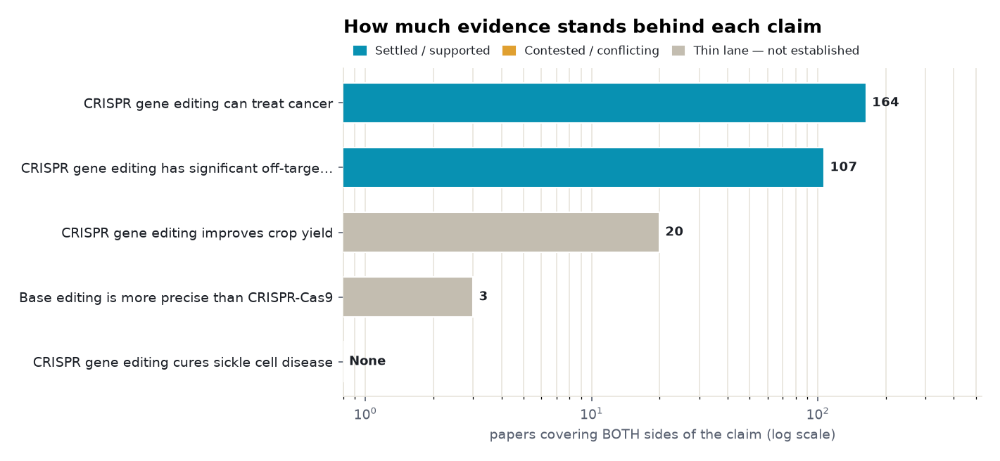
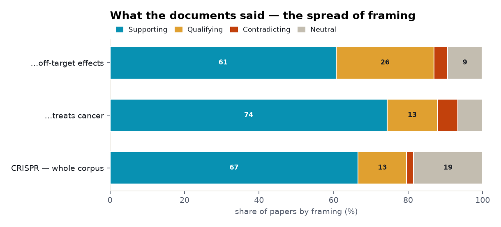
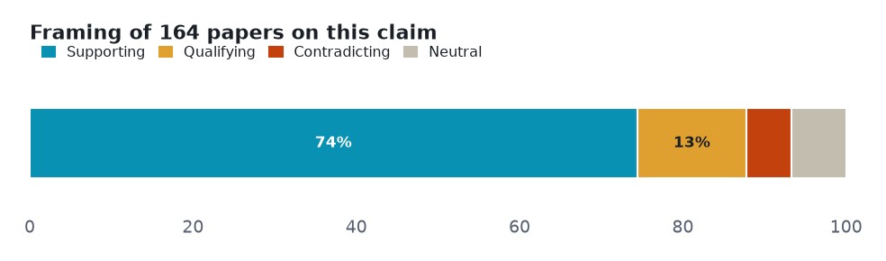
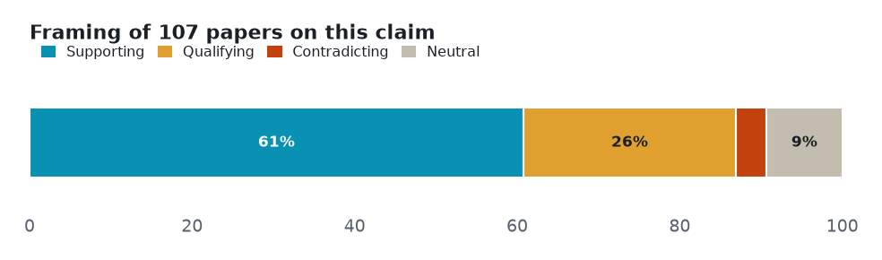
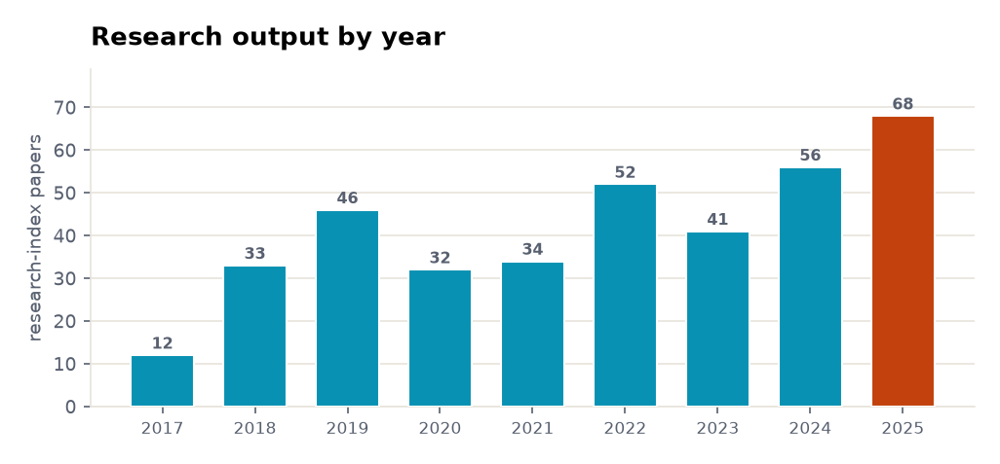
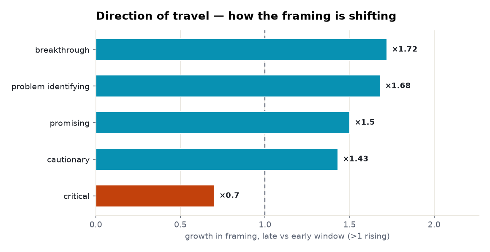

Five claims about CRISPR gene editing tested against both sides of the published literature — 1 that the evidence settles, 2 it leaves genuinely contested, 2 with too thin a lane to call.
Every number below is retrieved, not generated. Each angle is a claim run against the research layer on both sides — the papers that affirm it and the papers that push back — so the verdict reflects how much evidence exists and which way it leans, not a single cherry-picked study. Effect sizes are quoted verbatim and verified; thin lanes are reported as inconclusive rather than charted as fact.
| Subject | CRISPR gene editing |
| Retrieved | 2026-11-06 |
| Coverage | research typed 107% · research 104.2% · biomedical 100% |
| Source | Prism public API — research.evidence (one call per angle) |
Each section is one claim. The bar shows how the papers framed it — supporting, qualifying (yes, but…), contradicting, or neutral — and the verdict weighs that spread against how deep the evidence runs. A claim can be loudly discussed yet thinly evidenced; the brief says which.
Two cross-cutting views before the angle-by-angle read: how much both-sides evidence each claim has, and how the literature splits on framing.


Overwhelmingly positive framing, which on a citation-weighted corpus can mean consensus or can mean publication bias. Deepest lane, but concentrated in CAR-T immunotherapy and preclinical work; corpus_topics led by CAR-T cell therapy (46) and virus-based gene therapy (46).

Common findings
Verdict: Well supported · both-sides papers: 164 · mean stance: +0.49 · contested: 18.9%
Mostly positive framing, with a substantial cautionary minority. The most contested CRISPR angle (29.9%) and the only one where the read document pushed back — newer methods report 'little or no' off-target editing.

Common findings
Verdict: Supported contested · both-sides papers: 107 · mean stance: +0.41 · contested: 29.9%
The outcome pole matched biomedical subject headings only (Anemia, Sickle Cell), so no both-sides intersection formed and Prism fell back to the subject lane; the extracted health-claim layer carried the real evidence instead.
Lane not cleanly resolved — read from the documents. Not charted as established; the finding is reported from the individual studies.
Common findings
Verdict: Landmark trial claim outpaces design · both-sides papers: None
Overwhelmingly positive framing, which on a citation-weighted corpus can mean consensus or can mean publication bias. Only 20 papers cover both sides of the claim; most CRISPR-crop work targets traits (disease resistance, quality), not yield itself, so the yield claim is thin at the claim level.
Thin lane — 20 papers cover both sides. Not charted as established; reported as the boundary of the evidence.
Common findings
Verdict: Not established · both-sides papers: 20
Only 3 papers cover both sides of this comparison; the field describes base editing avoiding double-strand breaks and reporting 'no off-target mutations', but head-to-head precision benchmarks against CRISPR-Cas9 are almost absent — assumed, rarely demonstrated.
Thin lane — 3 papers cover both sides. Not charted as established; reported as the boundary of the evidence.
Common findings
Verdict: Not established · both-sides papers: 3
The field's own tempo: research-index papers on this subject per year, from 12 in 2017 to 68 in 2025.

Across 4,422 papers, the framing is shifting — how much each orientation grew in the late window versus the early one. Above 1× is rising; below 1× is fading.

Common findings
The safety claim is fully scaffolded — a real literature behind every sub-claim, not a gap
Common findings
News on CRISPR is a thin, high-priority, almost-uniformly-positive stream; the qualifying/cautionary nuance lives in the research layer, not the news layer
Common findings
Counts and shares measured from the data. Quoted findings verbatim and verified. Two angles fell to the subject lane (no clean both-sides intersection) and are reported that way, not charted by a both-sides count.
Each angle is one call against the research-evidence layer: the claim is posed, both sides of the literature are retrieved, and the framing tally is computed from the returned papers. Thin lanes are named, not inflated — the point of the exercise is to show where the evidence is deep, where it is contested, and where it barely exists.
A Prism worked example. Charts are generated from the retrieved data; every quoted finding is verbatim and verified. data.json holds the underlying numbers.